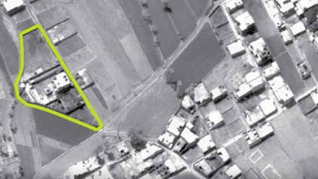

No, el presidente brasileño, Jair Bolsonaro, no ha dado positivo por coronavirus
El presidente de Brasil, Jair Bolsonaro, ha dado negativo de coronavirus, tres días después de concluir una visita a Miami, que incluyó numerosos actos públicos y una cena con el mandatario estadounidense, Donald Trump, informó este viernes el Gobierno.
Bolsonaro se sometió a los exámenes después de que se confirmó que la enfermedad había sido contraída por el jefe de la Secretaría Especial de Comunicación de la Presidencia, Fabio Wajngarten, quien integró la comitiva oficial que viajó a Miami.
El propio mandatario informó sobre el negativo en su perfil en la red Twitter.
Bolsonaro cenó con Donald Trump en Mar-a-Lago este sábado.Las imágenes compartidas en redes muestran a Trump y a Bolsonaro muy cercanos en esa cena.'No estoy preocupado', ha dicho Trump cuando los periodistas le preguntaron por la posibilidad de haber sido contagiado con el virus.
Este miércoles, Bolsonaro había calificado la crisis del coronavirus de 'desproporcionada'.
Posted On: 2020-03-13T17:15:00
Posted By: J.O.

Content Date: 2020-03-13
Download Date: 2021-05-13
Document ID: L0C04C9CI